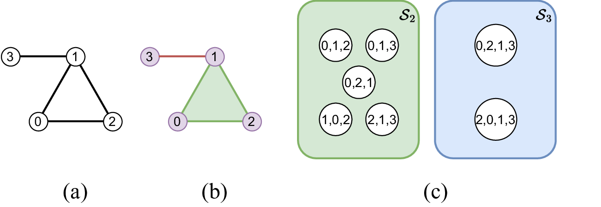
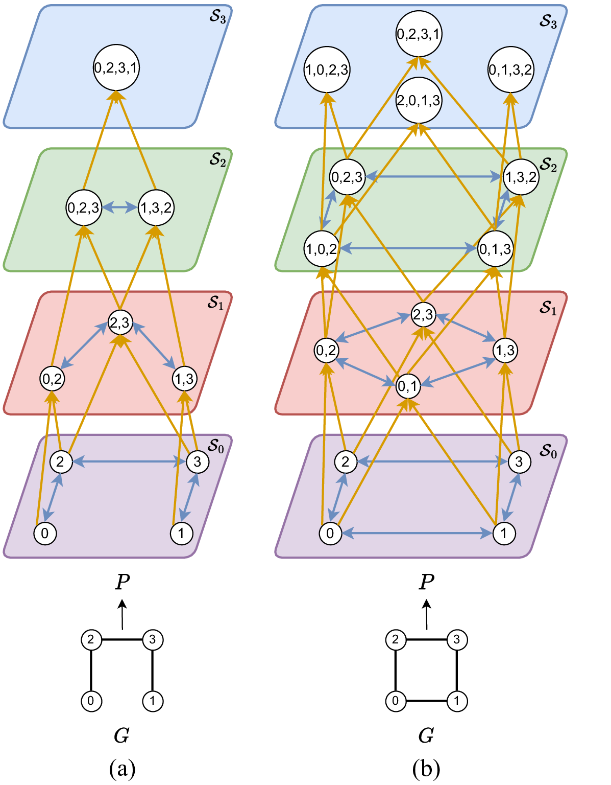
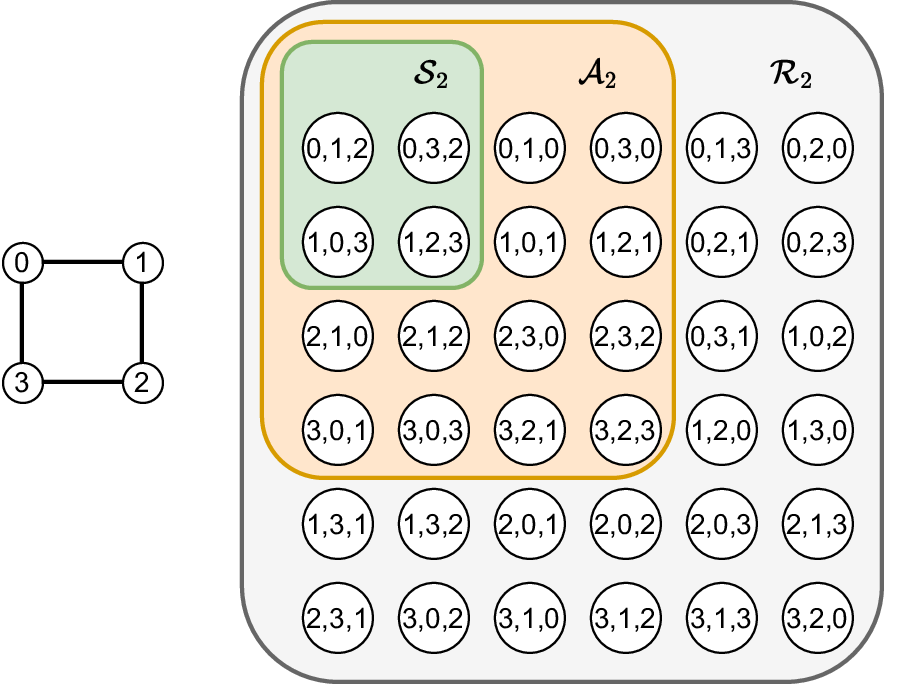

Learnable Path-Complex Features and Unified Path–Cellular Message Passing for Link Prediction
Two small but targeted modifications to Path Complex Networks: a position-aware learnable cell initialization that strictly subsumes the deterministic scatter-sum, and a unified path+cellular complex in which path-cells and ring-cells coexist and communicate through shared edge boundaries.
Path Complex Networks (PCN) generalize simplicial and cellular message-passing schemes by lifting a graph to its path complex and exchanging messages between elementary $k$-paths through boundary, co-boundary, and upper/lower-adjacency relations. In the original formulation, the feature of a $k$-cell $(v_0, \ldots, v_k)$ is a deterministic scatter-sum (or scatter-mean) of its constituent node features, discarding both the ordering along the path and any learnable capacity at the lifting step. Moreover, PCN commits to a single topological lift—paths, cliques, or rings—so the model cannot simultaneously exploit the complementary inductive biases offered by different cell types. We address both limitations in the context of transductive link prediction. First, we introduce a position-aware learnable feature initialization in which each position along a $k$-cell receives its own linear map, yielding order-sensitive path features at no asymptotic cost. We prove that this initialization strictly subsumes the deterministic scatter-sum. Second, we construct a unified path + cellular complex in which path-cells and ring-cells coexist at the same dimension and communicate through shared edge boundaries, so that a triangle $ABC$ is simultaneously a path $A{\to}B{\to}C$ and a 3-cycle without duplicating adjacency bookkeeping. We show that the isomorphism test induced by message passing on the unified complex (which we call U-PWL) is at least as powerful as both PWL and CWL($k$-IC), giving our architecture the theoretical expressivity of path-based and ring-based lifts simultaneously. We evaluate both contributions on Cora link prediction, ablating (i) deterministic vs. learnable initialization and (ii) path-only vs. unified complexes across 10 seeds per configuration, and we analyze the incurred lifting and message-passing cost both analytically and empirically.
Introduction
Graph neural networks (GNNs) that rely on the 1-Weisfeiler–Lehman (1-WL) update rule are fundamentally limited in their ability to distinguish non-isomorphic graphs . Higher-order topological GNNs escape this upper bound by lifting the graph to a richer combinatorial object—a simplicial complex , a regular cell complex , or a path complex —and running message passing over its cells. Each lift carries a different inductive bias: simplicial complexes privilege cliques, regular cell complexes privilege induced cycles, and path complexes privilege simple paths and therefore impose no structural assumption at all. For link prediction, however, the closed-neighborhood structure of a candidate edge $(u, v)$—how $u$ and $v$ co-participate in short cycles—is precisely the signal a model needs, and pure-path lifts discard that signal by construction.
Path Complex Networks (PCN) are attractive precisely because paths exist in every connected graph, but the published formulation leaves two degrees of freedom unused. First, cell features at dimension $k \geq 1$ are initialized by a deterministic scatter-sum of node features. Because summation is symmetric under permutation, the initial feature of the elementary path $A{\to}B{\to}C$ is identical to that of $C{\to}B{\to}A$, which is counterintuitive for an object whose defining property is an ordering of its vertices. Second, the lift is monolithic: one picks paths or rings or cliques. In practice, however, the same substructure—say a triangle—is a clique, a 3-cycle, and a path of length two simultaneously, and a model with access to all three views should, in principle, be strictly more expressive than any single one of them. This problem is especially pronounced for link prediction: the features that drive prediction (common neighbors, short cycles, triangle count) are expressed naturally in terms of ring-cells, while the features that drive graph-classification performance in PCN (long open paths) are expressed naturally in terms of path-cells.

Figure 1. (a) Original graph. (b) Simplicial complex arising from the graph: one 2-simplex, four 1-simplices, and four 0-simplices. The regular cell complex coincides with the simplicial complex in this case. (c) Simple-path spaces $\mathcal{S}_2$ and $\mathcal{S}_3$ corresponding to the path complex arising from the graph. Elementary paths of $\mathcal{S}_0$ and $\mathcal{S}_1$ coincide with 0-cells and 1-cells. Figure reproduced from .
We propose two small but targeted modifications to PCN.
Learnable, position-aware cell initialization. For an elementary $k$-path $(v_0, \ldots, v_k)$ we learn $k+1$ linear maps $W_0^{(k)}, \ldots, W_k^{(k)}$, one per position, and define the initial feature as $h_\sigma^{(0)} = \sum_{i=0}^{k} W_i^{(k)} x_{v_i}$. Node features thus enter the path-complex through a learned, ordered transform rather than a symmetric aggregation.
Unified path + cellular complex. We build a single complex in which path-cells and ring-cells coexist at dimension two, share the same edge identifier map, and communicate through their shared edges during message passing. A triangle therefore sends messages as a ring-cell and simultaneously appears as a path-cell; the two views are fused downstream through the dim-1 edges they both bound.
Both modifications are drop-in: the message-passing layer is unchanged, and the per-cell feature dimension is unchanged. We evaluate on Cora link prediction in the transductive setting of , reporting mean $\pm$ standard deviation of test ROC-AUC over 10 seeds for four configurations: (path, deterministic), (path, learnable), (unified, deterministic), (unified, learnable).
Contributions. Our work (i) identifies two underused degrees of freedom in the PCN lifting step—position order and cell-type multiplicity—and (ii) provides lightweight, backward-compatible modifications that address both. We prove that the position-aware initialization strictly subsumes the deterministic scatter-sum used by , and that the unified lift (U-PWL) inherits the theoretical guarantees of both PWL and CWL($k$-IC) . We validate the theory with an ablation study on Cora link prediction, and we analyze the computational overhead of both modifications analytically and empirically.
Preliminaries
Path complexes
Given a finite graph $G = (\mathcal{V}, \mathcal{E})$, a simple path of length $k$ is an ordered tuple $(v_0, \ldots, v_k)$ of distinct vertices with $\{v_i, v_{i+1}\} \in \mathcal{E}$ for all $0 \leq i < k$. Following , the set $P_k(G)$ of all such paths, together with boundary maps $\partial$ defined by deletion of the leftmost or rightmost vertex, forms a path complex.
Definition 1 (Elementary $p$-path).
Given a finite non-empty vertex set $\mathcal{V}$, an elementary $p$-path on $\mathcal{V}$ is any sequence of vertices $e_{i_0 \ldots i_p}$ with length $p + 1$.
Definition 2 (Boundary operator).
The boundary operator on elementary $p$-paths is defined as
\partial \, e_{i_0 \ldots i_p} = \sum_{q=0}^{p} (-1)^q e_{i_0 \ldots \hat{i}_q \ldots i_p},
where $\hat{i}_q$ indicates removal of the index $i_q$ from the sequence.
Message passing in PCN operates over $P_0(G) \cup P_1(G) \cup \cdots \cup P_K(G)$ via boundary, co-boundary, and upper/lower-adjacency relations between elementary paths, in direct analogy with MPSN and CWN .

Figure 2. Examples of path complexes arising from (a) a simple path of length three and (b) a ring of size four. Blue arrows denote upper-adjacency; orange arrows denote boundary relations. Figure reproduced from .
Relations between cells
For a path complex $P$ and cells $\sigma, \tau \in P$, the relations used for message passing are:
As proven in , PWL with update rule $\mathrm{Hash}(c_\sigma^t, c_\mathcal{B}^t(\sigma), c_\uparrow^t(\sigma))$ is as powerful as PWL with the generalized update rule that also includes co-boundary and lower-adjacent messages. We adopt the former throughout.
Deterministic feature initialization in PCN
In the public PCN implementation , the feature of an elementary $k$-path at the input layer is
where $\oplus \in \{\text{sum}, \text{mean}\}$ is a permutation-invariant aggregator and $x_v$ is the input feature of vertex $v$. We refer to this as the deterministic init. The expression is symmetric under any permutation of $(v_0, \ldots, v_k)$, so path orientation is lost at initialization and cannot be recovered by subsequent layers that operate only on $h_\sigma^{(0)}$.
Link prediction
We consider the transductive link-prediction setting of . Given a graph $G = (\mathcal{V}, \mathcal{E})$, a fraction of edges is held out for validation and test, and the model is trained to discriminate observed edges from sampled negatives. A graph encoder $f_\theta: \mathcal{V} \to \mathbb{R}^d$ produces a node embedding $h_v = f_\theta(v)$, and a decoder $g_\phi: \mathbb{R}^d \times \mathbb{R}^d \to [0, 1]$ produces an edge score $\hat{y}_{uv} = g_\phi(h_u, h_v)$. Throughout we use a dot-product decoder $\hat{y}_{uv} = \sigma(h_u^\top h_v)$ and binary cross-entropy loss, evaluated by ROC-AUC on the held-out edges.
where $W_i^{(k)} \in \mathbb{R}^{d \times d_\text{in}}$ is a learnable linear map specific to the pair $(k, i)$ of dimension and position. Asymptotically the cost of the learnable init is identical to the deterministic one: each node contributes exactly once to the feature of each cell that contains it, and the only change is that the contribution is multiplied by a position-specific matrix before being accumulated.
Proposition 1.
When $W_i^{(k)} = W$ for all $(k, i)$, the learnable init reduces to $W \sum_{i=0}^{k} x_{v_i}$, which is a linear projection of the deterministic scatter-sum. Hence any model built on top of the deterministic init is realizable by a model built on top of the learnable init; the converse does not hold.
Theorem 1.
There exist a graph $G$ and elementary paths $\sigma, \sigma' \in P_k(G)$ which are equal as unordered multi-sets of vertices but differ as ordered tuples, such that the learnable init can assign them distinct initial features, whereas the deterministic init cannot.
A proof appears in Appendix A.1. The practical implication is that the learnable init breaks orientation symmetry at time step $t = 0$; any information that depends on the ordering of vertices along a path is thus available to all subsequent message-passing layers, rather than being filtered out irretrievably at initialization.
Unified path–cellular complex
Let $P_k(G)$ denote the set of simple $k$-paths of $G$ and $R(G)$ the set of induced cycles up to length $L$. We build a unified complex $\mathcal{C}(G)$ with cells
The dim-0 and dim-1 identifier maps are shared across path-cells and ring-cells—edges are canonicalized to sorted tuples—so a ring-cell and a path-cell that share an edge point to the same edge identifier. Boundary extraction branches on cell type: path-cells use the left/right-deletion rule from §2.1, and ring-cells use the standard CW boundary map that returns every edge of the cycle. Upper and lower adjacencies are then computed by the existing PCN routine on the combined boundary tables, so messages flow seamlessly between a ring-cell and a path-cell that happen to share an edge.

Figure 3. The unified path + cellular complex on a small graph. At dimension two, the triangle $ABC$ appears simultaneously as a ring-cell and as a path-cell $A{\to}B{\to}C$. Both cells share the edge-cells $AB$ and $BC$; the ring-cell additionally shares $AC$. Because messages flow between any two dim-2 cells that share a dim-1 boundary, the ring and path views of the triangle communicate during upper- and lower-adjacency message passing.
Why this helps link prediction. Link prediction rewards models whose node embeddings capture closed-neighborhood structure: a pair $(u, v)$ is more likely to be linked when $u$ and $v$ participate in short cycles. Path-cells expose only open neighborhoods; ring-cells expose closed ones. Since cycles of length at most $L$ in Cora are overwhelmingly short, adding ring-cells to a path complex injects a targeted topological signal that paths alone do not carry.
Theoretical results
We establish that the isomorphism test induced by color refinement on the unified complex—which we call U-PWL—inherits the expressivity of both PWL and CWL($k$-IC) .
Theorem 2.
U-PWL is at least as powerful as PWL at distinguishing non-isomorphic graphs.
Theorem 3.
U-PWL is at least as powerful as CWL($k$-IC) with maximum dimension 2 at distinguishing non-isomorphic graphs.
Combining the two theorems and the result of that PWL is at least as powerful as CWL($k$-IC) with maximum dimension 2, we obtain:
Corollary 1.
U-PWL is strictly more powerful than 1-WL at distinguishing non-isomorphic graphs. Moreover, U-PWL is not less powerful than 3-WL.
Proofs of Theorems 2 and 3 appear in Appendix A.2 and Appendix A.3; the proof of Corollary 1 is immediate from Theorems 2–3 together with prior results by and .
Message passing
Following , we update the feature of a cell $\sigma$ by aggregating boundary and upper-adjacent messages:
where $M_\mathcal{B}, M_\uparrow$, and $\mathrm{UP}$ are learnable functions realized by multi-layer perceptrons (MLPs). In the unified complex, the boundary and adjacency sets include ring-cells alongside path-cells, but the update rule itself is unchanged.
Link-prediction decoder
After $T$ message-passing layers, we extract node embeddings $h_v = h_\sigma^{(T)}$ for all $\sigma \in \mathcal{C}_0$ and score a candidate edge $(u, v)$ by a dot-product decoder:
\hat{y}_{uv} = \sigma\left( h_u^\top h_v \right),
where $\sigma$ is the logistic sigmoid. Training minimizes binary cross-entropy over sampled positive and negative edges.
Experiments
We evaluate our two contributions on Cora link prediction . Cora is a citation network with 2,708 nodes and 5,429 undirected edges; each node is a scientific publication with a 1,433-dimensional bag-of-words feature vector and a class label in one of seven research areas. We do not use the class labels. Detailed hyperparameter settings and an extended ablation on individual modifications appear in Appendix B.
Setup
We follow the transductive link-prediction protocol of : edges are split 85/5/10 into train/validation/test with an equal number of sampled negatives per split. The path complex (or unified complex) is built from training message-passing edges only, so there is no leakage of validation or test edges into the topology. All models use a 2-layer PCN encoder with hidden dimension 64, dropout 0.3 applied before the final linear layer, batch normalization, a dot-product decoder, and Adam with learning rate 0.01 and ReduceLROnPlateau scheduling (patience 20, decay rate 0.5, minimum learning rate $10^{-5}$). Each run is 200 epochs with early stopping on validation AUC. We report mean $\pm$ standard deviation over 10 seeds ($0, \ldots, 9$) and adopt the model checkpoint from the best validation epoch.
For the unified complex, the maximum ring size is set to $L = 7$, which is the default cutoff used by on small molecular graphs and which we found to be a reasonable compromise between topological coverage and lifting cost on Cora.
Ablations
Table 1. Cora link-prediction ROC-AUC (mean $\pm$ standard deviation over 10 seeds). Rows correspond to the four configurations obtained by crossing the lift (path vs. unified path + cellular) with the cell-feature initialization (deterministic scatter-sum vs. position-aware learnable). Bold indicates the best result in each column.
Complex
Init
Val AUC
Test AUC
Path
Deterministic
$0.7344 \pm 0.0274$
$0.7113 \pm 0.0239$
Path
Learnable
$0.7354 \pm 0.0230$
$0.7123 \pm 0.0164$
Unified
Deterministic
$\mathbf{0.7366 \pm 0.0270}$
$\mathbf{0.7132 \pm 0.0165}$
Unified
Learnable
$0.7335 \pm 0.0213$
$0.7111 \pm 0.0175$
Table 1 reports the four configurations. The (path, deterministic) baseline achieves test AUC $0.7113 \pm 0.0239$, consistent with the fact that PCN was not designed for link prediction and a pure-path lift provides little closed-neighborhood signal. Switching to the learnable initialization alone (row 2) yields a marginal mean improvement (0.7123) and a substantial reduction in variance (0.0164 vs. 0.0239), which we attribute to the position-specific projections stabilizing the training trajectory across seeds. Replacing the path lift with the unified lift (row 3) gives the best mean test AUC (0.7132), again with reduced variance. Composing both modifications (row 4) does not produce further gains and in fact performs slightly worse than either modification in isolation, suggesting that the two degrees of freedom are partially redundant on Cora; we conjecture that the additional parameters of the learnable init interact with the richer unified adjacency structure in a way that regularization at dropout 0.3 cannot fully counter.
Computational analysis
Table 2 reports the empirical cost of the four configurations on Cora, measured on an NVIDIA® GPU with tools/bench_cost.py. Three effects are visible. First, the learnable init adds 275,136 parameters to the encoder (from 428,544 to 703,680, a 64% increase) because the shared input projection $W^{(k)}$ is replaced by $(k + 1)$ position-specific projections for each $k = 1, 2$; in wall-clock terms a training epoch grows from 28.5 ms to 37.5 ms on the path complex, a 32% overhead. Second, moving from the path lift to the unified lift raises the dim-2 cell count from 38,008 path-cells to 47,717 path- and ring-cells (an extra 9,709 induced cycles of length at most $L = 7$); this is a 26% increase in dim-2 cells and approximately a tripling of lift time, from 22.0 s to 62.8 s. Third, training-epoch overhead from the unified lift is modest ($28.5 \to 33.0$ ms with the deterministic init) because message passing is dominated by dim-0 and dim-1 cells, whose counts are identical across the two lifts.
Table 2. Measured cost of each configuration on Cora. Lift time is one-off preprocessing (building the cell tables and boundary relations). Train epoch is wall-clock time per full-graph training epoch, averaged over 20 epochs after 3 warm-up epochs. Parameters counts learnable parameters in the encoder.
Configuration
Lift time (s)
Train epoch (ms)
Parameters
Path, Deterministic
22.0
28.5
428,544
Path, Learnable
22.0
37.5
703,680
Unified, Deterministic
62.8
33.0
428,544
Unified, Learnable
62.8
43.2
703,680
Asymptotically, enumerating all simple $k$-paths in a graph on $n$ nodes with branching factor $b$ takes time $\mathcal{O}(n \cdot b^k)$ . Adding the ring extractor raises the bound only by $\mathcal{O}(n \cdot b^L)$ for the maximum ring size $L$, which for small $L$ (e.g. $L = 7$ on Cora) is comparable to the path enumeration at $k = 2$. The learnable init adds $\mathcal{O}(k_\text{max}^2 \cdot d \cdot d_\text{in})$ parameters and does not alter the asymptotic cost of message passing.
Discussion
Neither of our modifications is expected to close the gap to specialized link-prediction architectures such as SEAL , NBFNet , or a well-tuned VGAE —those models exploit properties of the link-prediction problem (subgraph enclosure, Bellman–Ford relational paths, bilinear decoders on structural features) that are largely orthogonal to the topological lift studied here. What the ablation does isolate is the marginal effect, within the PCN family, of (i) learning the lift from data and (ii) admitting multiple cell types simultaneously.
A natural limitation of the unified complex is duplication: a 3-cycle $ABC$ is now represented both as a ring-cell and as three path-cells $A{\to}B{\to}C$, $B{\to}C{\to}A$, and $C{\to}A{\to}B$. We do not deduplicate, and we expect this to over-weight triangle structure; exploring learnable gating between cell types—so the model can route messages preferentially through path-cells or ring-cells depending on the task—is a promising direction. Separately, the modest gains observed on Cora may reflect the saturation of AUC on a small, dense citation graph; larger benchmarks such as OGBL-COLLAB and OGBL-PPA, where closed-neighborhood structure varies more widely across node pairs, are a natural next target.
Related work
Higher-order GNNs. Topological deep learning investigates interactions beyond pair-wise adjacencies and has gained significant attention in recent years . introduce MPSN and CWN, message-passing models over simplicial complexes and regular cell complexes, which are provably not less powerful than the 3-WL test. extend CWN to CIN++ by incorporating lower-adjacent messages. propose PCN, which lifts to path complexes and is proven to generalize CWL($k$-IC) with maximum dimension 2. Our work sits strictly within the PCN family and investigates complementary degrees of freedom that the original paper leaves unused.
Link prediction with GNNs. introduce the transductive link-prediction protocol on citation networks with the VGAE model. propose SEAL, which extracts enclosing subgraphs around candidate edges and learns a graph-classification model over them. generalize Bellman–Ford to neural relational path aggregation (NBFNet). These approaches exploit properties of the link-prediction problem itself (subgraph enclosure, path counting) rather than the topological richness of the underlying complex, and our contributions are compatible with any of them at the encoder level.
Path-based graph learning. (pathGCN) learn spatial operators from randomly sampled paths. (PathNN) update node representations based on paths of different lengths. (GSN) encode nodes or edges by counting the occurrences of sub-structures they belong to. Unlike these methods, which operate on top of the standard graph structure, PCN lifts the graph to a genuinely higher-order object; our extensions retain that advantage while widening the set of topological signals available to the model.
Learnable lifts. Most topological GNNs use a fixed, hand-designed lift: cliques of bounded size , induced cycles up to a cutoff , or simple paths of bounded length . A small number of recent works explore lifts that are themselves learned from data; our position-aware initialization can be seen as a minimal instance of this idea, in which the cell type (path vs. ring) is fixed but the mapping from constituent node features to the cell feature is learned.
Conclusion
We have introduced two targeted extensions to Path Complex Networks: a position-aware learnable cell initialization that is strictly more expressive than the deterministic scatter-sum, and a unified path + cellular lift that admits path-cells and ring-cells at a common dimension and fuses them through shared edge boundaries. We prove that the resulting unified isomorphism test U-PWL is at least as powerful as both PWL and CWL($k$-IC), and we empirically ablate both modifications on Cora link prediction. Each modification in isolation yields a small improvement in mean test AUC and a noticeable reduction in seed variance, while composing both does not deliver further gains—suggesting that on this benchmark the two degrees of freedom are partially redundant. Future work includes extending the unified complex to admit clique-cells (simplicial) alongside paths and rings, evaluating on larger OGB link-prediction benchmarks, testing whether the position-aware initialization offers benefits for graph-classification tasks on which PCN is already competitive, and introducing learnable gating between cell types so the model can route messages preferentially through path-cells or ring-cells depending on the task.
Acknowledgments
We thank the Thayer School of Engineering at Dartmouth College for providing computing resources.
Appendix A. Proofs
A.1 Proof of Theorem 1
Proof.
Let $G$ be the path graph on three vertices $a, b, c$ with edges $\{a, b\}, \{b, c\}$, and assign node features $x_a = e_1$, $x_b = e_2$, $x_c = e_3$, where $e_1, e_2, e_3$ are the standard basis vectors of $\mathbb{R}^3$. Consider the two elementary 2-paths $\sigma = (a, b, c)$ and $\sigma' = (c, b, a)$, which are equal as multi-sets but opposite as ordered tuples.
Under the deterministic init with $\oplus = \text{sum}$, $h_\sigma^{(0)} = x_a + x_b + x_c = e_1 + e_2 + e_3 = h_{\sigma'}^{(0)}$; hence the deterministic init assigns identical features to $\sigma$ and $\sigma'$.
Under the learnable init, choose $W_0^{(2)} = A$, $W_1^{(2)} = B$, $W_2^{(2)} = C$ for three matrices $A, B, C$ such that $A e_1 + C e_3 \neq C e_1 + A e_3$ (e.g. $A = I$, $C = 2I$, $B = 0$). Then $h_\sigma^{(0)} = A e_1 + B e_2 + C e_3$ and $h_{\sigma'}^{(0)} = A e_3 + B e_2 + C e_1$, and by construction $h_\sigma^{(0)} \neq h_{\sigma'}^{(0)}$. Hence the learnable init can distinguish $\sigma$ from $\sigma'$, whereas the deterministic init cannot. $\blacksquare$
A.2 Proof of Theorem 2
Proof.
The unified complex $\mathcal{C}(G)$ is obtained from the path complex $P(G)$ of by adding additional dim-2 cells—the ring-cells in $R(G)$—while keeping all dim-0, dim-1, and dim-$k$ ($k \geq 3$) cells identical. Boundary extraction for path-cells in $\mathcal{C}(G)$ is identical to boundary extraction in $P(G)$, so the boundary relations among path-cells are preserved.
Let $c$ be the coloring produced by PWL on $P(G)$ and $d$ the coloring produced by U-PWL on $\mathcal{C}(G)$. Consider two graphs $G_1, G_2$ distinguishable by PWL: there exists a time step $t$ for which the multi-set of colors on $P(G_1)$ differs from that on $P(G_2)$.
Consider the restriction of U-PWL to path-cells only: since the $\mathrm{Hash}$ function of U-PWL uses the boundary and upper-adjacency relations, and these relations restricted to path-cells coincide with the PWL relations plus extra upper-adjacencies via shared ring-cells, a simple induction on $t$ shows that $d$ refines $c$. By the corollary on color refinement in , $d \sqsubseteq c$ and $c^{G_1} \neq c^{G_2}$ imply $d^{G_1} \neq d^{G_2}$. Hence U-PWL distinguishes $G_1$ from $G_2$ whenever PWL does. $\blacksquare$
A.3 Proof of Theorem 3
Proof.
The ring-cells in $R(G)$ are exactly the 2-cells added by CWL($k$-IC) with maximum dimension 2. Boundary extraction for ring-cells in $\mathcal{C}(G)$ uses the CW boundary map, and upper/lower adjacencies among ring-cells and their edge boundaries are identical to those computed by CWL($k$-IC). The additional path-cells do not restrict the set of ring-cell relations—they only add further upper-adjacencies via shared path-cells at dim 2.
Let $e$ be the coloring produced by CWL($k$-IC) on the regular cell complex $K(G)$ and $d$ the coloring produced by U-PWL on $\mathcal{C}(G)$. An induction on $t$, analogous to that in A.2, establishes that restricted to ring-cells (and the shared dim-0 and dim-1 cells), $d$ refines $e$. By the color-refinement corollary , any pair of graphs distinguished by CWL($k$-IC) is also distinguished by U-PWL. $\blacksquare$
Appendix B. Higher-order message-passing formula
The update formula for a PCN (or unified PCN) layer, inherited from , is
where $\sigma$ is a dim-$p$ cell and $\varepsilon_\mathcal{B}, \varepsilon_\uparrow$ are GIN-style learnable scalars . For link prediction, we read out dim-0 (node) features only; for graph classification, we apply a permutation-invariant pool per dimension followed by a Readout across dimensions.
Appendix C. Experiments: extended details
Our code is based on the public PCN repository , which in turn builds on the MPSN and CWN implementations. It is powered by PyTorch and PyTorch Geometric . Graph lifting is implemented with the help of graph-tool and NetworkX . All experiments are optimized by Adam ; we do not use weight decay. Experiments are executed on a workstation with an NVIDIA® GeForce® RTX™ GPU.
C.1 Dataset statistics
Cora is a citation network with 2,708 nodes, 5,429 undirected edges, and 1,433-dimensional bag-of-words node features. The average node degree is approximately 4.0, and the graph contains 1,630 triangles. We do not use the node-class labels in any of our experiments; the task is link prediction on the induced graph topology.
C.2 Hyperparameter settings
Table C.1. Hyperparameter settings for the Cora link-prediction ablations. All four configurations share the same hyperparameters; only the lift (complex_type $\in$ \{path, unified\}) and the initialization (learnable_init flag) differ.
Parameter
Cora (all configurations)
Batch size
1 (full-graph)
Embedding dimension
64
Number of message-passing layers
2
Maximum lifting dimension
2
Maximum ring size (unified)
7
Dropout rate
0.3
Non-linearity
ReLU
Graph normalization
batch norm
Path-level Readout
sum
Final Readout
sum
Readout dimensions
$\{0, 1, 2\}$
Jumping knowledge
None
Learning rate
0.01
Learning rate scheduler
ReduceLROnPlateau
Scheduler patience
20
Scheduler decay rate
0.5
Minimum learning rate
$10^{-5}$
Epochs
200
Validation ratio
0.05
Test ratio
0.10
Negative sampling ratio
1.0
Decoder
dot-product
Loss
binary cross-entropy
C.3 Per-seed results
Table C.2 reports the per-seed test AUC of each of the four configurations on Cora. We observe that the variance across seeds is reduced by both the learnable init and the unified lift, which is consistent with the interpretation of each as a mild regularizer that stabilizes training.
Table C.2. Per-seed test AUC on Cora. P = path lift; U = unified path + cellular lift; Det = deterministic init; Learn = learnable init.
Seed
P, Det
P, Learn
U, Det
U, Learn
0
0.7195
0.7192
0.7129
0.7067
1
0.7081
0.7329
0.7141
0.7146
2
0.7373
0.7066
0.7289
0.6935
3
0.7501
0.7268
0.7350
0.7341
4
0.7063
0.6864
0.7154
0.6860
5
0.7039
0.7333
0.7169
0.7436
6
0.6637
0.6941
0.6790
0.7069
7
0.7254
0.7001
0.7236
0.6980
8
0.7051
0.7044
0.7139
0.7133
9
0.6937
0.7193
0.6927
0.7141
Mean
0.7113
0.7123
0.7132
0.7111
Std
0.0239
0.0164
0.0165
0.0175
C.4 Implementation notes
The learnable position-aware initialization is implemented in lib/layers/learnable_features.py as the LearnablePathFeatureInit module. Given the two tensors already produced by the path-complex builder—cell_node_index of shape $[2, N]$ (node identifier, cell identifier pairs) and cell_position_index of shape $[N]$ (position of the node within the cell)—we loop over positions $i = 0, \ldots, k_\text{max}$, mask the entries whose position equals $i$, apply the position-specific linear map $W_i^{(k)}$ to the corresponding node features, and accumulate the result into the cell feature buffer via index_add_. This preserves the linear asymptotic cost of the deterministic init while introducing exactly $(k_\text{max} + 1)$ additional parameter matrices per dimension.
The unified complex is constructed by computing $P_k(G)$ and $R(G)$ separately with the existing path-enumeration and ring-extraction routines, canonicalizing edges to sorted tuples, and concatenating the cell tables at dim 2. Boundary extraction then branches on a per-cell flag that records whether the cell originated from the path enumerator or the ring extractor; downstream, upper/lower adjacencies are computed on the union boundary table without further modification. The combined lift is cached to disk so that the cost is paid once per dataset.
Reproducibility
Code, configuration files, and per-seed logs are available at the project repository linked above. We use Weights & Biases to track experiments and to perform hyperparameter searches.